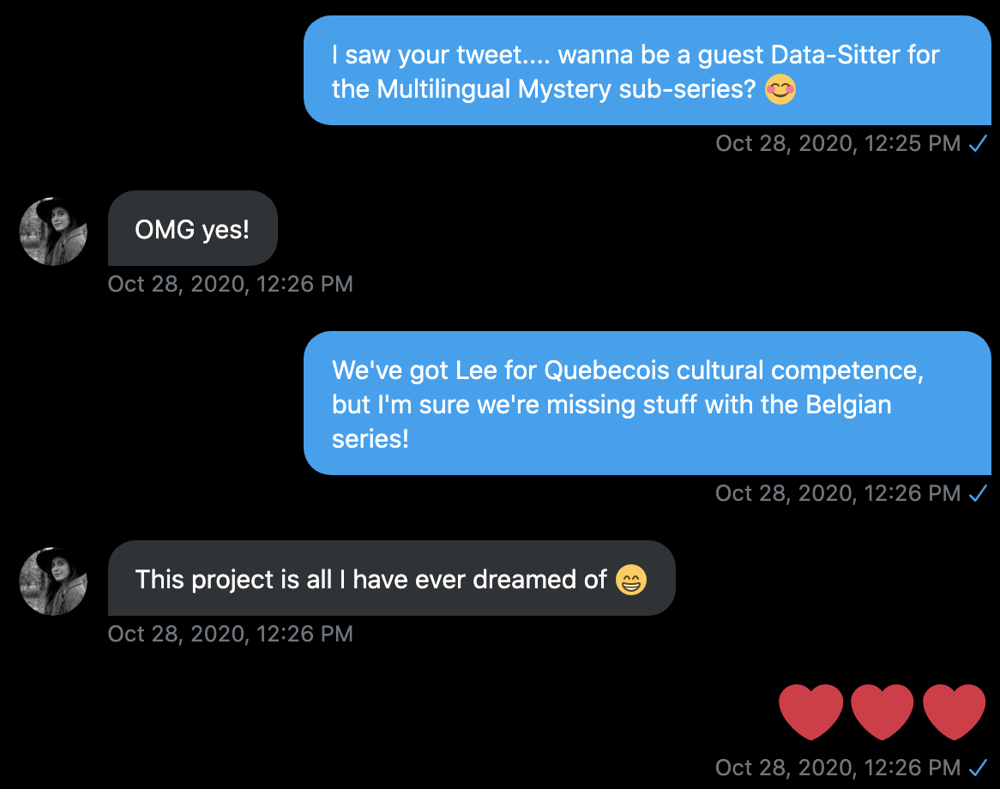
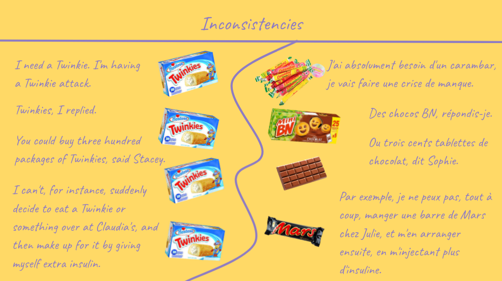
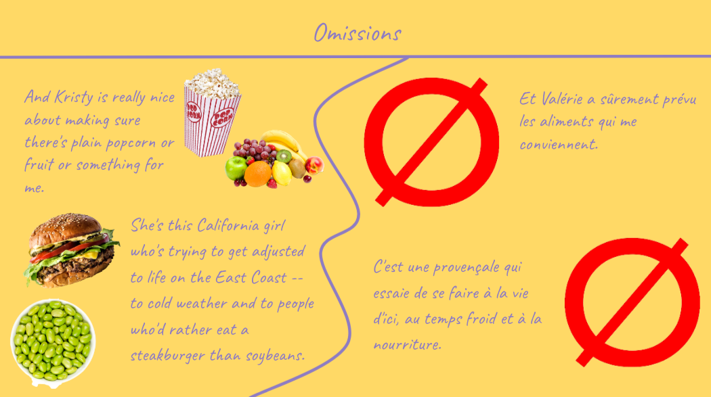
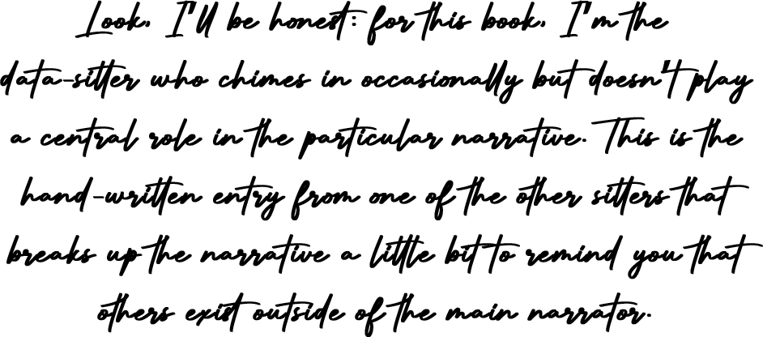

DSC Multilingual Mystery 4: Isabelle and the Missing Spaghetti-O’s¶

By Lee Skallerup-Bessette, Quinn Dombrowski, and Isabelle Gribomont
July 22, 2021
Quinn¶
Pandemic Time Warp¶
It’s been over a year since Lee and I cleaned up ghost cat data-hairballs with webscraper.io and OpenRefine.
In retrospect, it’s easy to recognize that book for what it was: 10,000 words of early-pandemic stress energy. While everyone else was buying up all the yeast and flour and baking bread with it, Lee and I were scraping a fan wiki and making the ultimate metadata sheet for our corpus.
We raced forward into April 2020, adopting translation corpus-building as a pandemic hobby. Lee arranged for a used bookseller in Quebec to ship every one of their Les Baby-Sitters books to my house. Cut off from the flatbed scanner I’d used at work due to the lockdown, I inquired if my department could buy me a document camera / scanner that I’d seen on an Instagram ad, of all places. The Czur ET 16 plus showed up on my 35th birthday and was the best present I could imagine; many thanks to Cécile Alduy, my department chair, for making it happen. (Her daughters are fans of the French graphic novels.)
But the pandemic wore on and on. Some days scanning and then proofreading the OCR seemed attainable. Other days, I shuddered at the prospect of fixing apostrophes and characters with accents on the clunky Windows laptop running ABBYY FineReader. Scanning and OCRing the whole original English BSC corpus was one thing in fall 2019 (when, in retrospect, all things felt attainable); slogging through so many French translations during 2020 was another matter.
At the beginning of the fall, Lee and I took a look at the French translations of the graphic novels that we’d explored in DSC #5: The DSC and the Impossible TEI Quandaries for a talk called “Layered Adaptation and Warped Nostalgia: Francophone Translations of the
Baby-Sitters Club Graphic Novels” at virtual Flyover Comics. We used some of the methods from DSC #9: Text-Comparison-Algorithm-Crazy Quinn to compare the graphic novels vs. the books they were based on, in English and French. (All made possible thanks to Katia, who left her self-isolation for the first time in four months to retrieve an errant package of Quebecois graphic novels, and her husband John, whom she enlisted to scan the graphic novels.)
But we didn’t write a multilingual mystery. Lee and I exchanged hundreds of text messages, but one thing we never confronted was the fact that we both were just stuck, the way Anouk and I got stuck on DSC #9: The Ghost in Anouk’s Laptop around the same time. And it took a new addition to the DSC Multilingual Mystery team to get us out of our rut.
Meet Isabelle¶
Isabelle Gribomont has long, untidy, light-brown hair and green-ish eyes. She aspires to Claudia’s fashion sense but is most often found in lounge clothes and sporting a ginormous top-knot.
But, of course, that’s not how she looked when we met her. She was just another a black Zoom square, like most of the audience at our talk at the University of British Columbia on October 28, 2020. Lee was talking about how much work went into localizing the Belgian translations, but it was hard for us to fully appreciate it, not being familiar with Belgian culture.
After the talk, Isabelle tweeted:

I nearly fell off my chair. I DMed her right away:

Isabelle¶
Before attending the UBC talk, I had been following the Data-Sitters Club from afar for a while and read some of the books they had published. Although I’m ashamed to say I had never read the Baby-Sitters Club series, I thought the project was pure genius. I was a very avid reader as a kid and have strong feelings about many children/YA book series to this day. As a more or less self-taught DH scholar, accessible and beginner-friendly DH tutorials also have a special place in my heart. Needless to say, I was very enthused by this cool project which was publishing down-to-earth DH experiments and giving ‘girly’ literature the attention it deserves. The UBC talk was around 7pm in my timezone and made for a perfect lockdown evening entertainment. I clearly remember watching the talk on my tablet, slumped on the couch while sipping some herbal tea. When Lee mentioned the Belgian translations, I got very excited and a little surprised, since I always assumed French translations of children’s books were published in France. As someone who learned about the French currency, school system, food vocabulary, and more generally the minor differences between French and Belgian language varieties through children’s books, I immediately wondered if the translation was in fact recognisably set in Belgium and using Belgian language. Although I’m usually the lurking type on Twitter, I decided to tweet about the talk and mentioned my interest for the Belgian translations, secretly wishing I could get involved in some way. I couldn’t believe my luck when Quinn sent me a DM and I immediately agreed to contribute. Quinn shared the books and their translations with me and we had our first meeting with Lee soon after.
During that initial meeting, we discussed whatever struck us as interesting or weird in the Belgian and Quebecois translations. The first thing I personally noticed in the Belgian translations is that they were actually set in France, just like all my childhood books. Not only was the language resolutely French (e.g. ‘ninety’ was ‘quatre-vingt-dix’ instead of the Belgian ‘nonante’), but cultural references such as the currency and the school systems were French as well. This is not surprising considering that (today) there are 4.5 billion French speakers in Belgium versus 64 billion in France. Eighties and nineties Belgian kids grew up watching French television and reading French books. I was hoping that the Baby-Sitters Club could be a rare example of a reverse dynamic, but it makes sense that the publishing house, although located in Belgium, would appeal to the whole European Francophone market. That meant that my Belgian-ness was not as crucial after all, but Francophone Belgians are exposed enough to the largely overlapping French culture that it didn’t matter too much.
The second obvious discovery was that the localization was really thorough - every character name was Frenchified, New York became Paris, bees turned into flies (a more iconic classroom pest), and school meals were overhauled to resemble French lunches. The US American experience portrayed in the series was not considered an asset, but rather something to be camouflaged as convincingly as possible.
Lee¶
As a Canadian, I was always struck by the brands that were name-dropped in the Baby-Sitters Club books. In the 1980s, before you could buy anything and everything you could ever want off of the Internet, we had a much different brand-named food landscape in particular than our neighbors to the south. I still remember going to Florida as a kid for vacation and marveling at the sheer number and variety of (sugary) cereals we had long heard of while watching Saturday morning cartoons, but never were able to procure at our local grocery stores. And while we could get M&Ms in Canada, we largely didn’t because we were loyal to our Cadbury version - Smarties.
And yes, Smarties down here in the States are those small, round sugar candies, but in Canada we call those Rockets, while Smarties for us were like M&Ms.
When I was first reading the books with an eye to how they were translated, I was interested in more generally how the brands would be translated, but not just food brands - the toys, the board games, the books, etc. Would they be localized to, in particular, Quebec, remain Americanized, or split the difference? I wasn’t particularly focused on food at that point, just wanting to see, other than location, if and how Quebec would be represented through these brands. The brands did represent to me a kind of Americanness, and I had also grown up in Quebec to know what would have been an equivalent to that to give the books a more Québécois flavor.
But of course, unless I could train some model on “Americanness” and “Québécois” it would take a lot of really long close readings of all the things, which kinda defeats the purpose of this being a DH project. And it didn’t take into consideration either of the other two translations in terms of how they were or were not representing either Americanness vis-a-vis the target culture they were being translated into.
I shouldn’t be surprised that my default would be, hey, let’s just literally line up the books side by side (by side by side) and compare, since that’s what I did for my dissertation, but it was with poetry, so a bit more reasonable. We needed a different way to access the texts through a more sustainable approach, and focusing just on food was a revelation. Food, with or without the brand names attached to it, reflects a great deal about culture and class, and especially in the Baby-Sitters Club books. We may be initially struck by the sheer number of brand-name candies Claudia hides in her bedroom, but if you look beyond that, you find a what’s-what of 1980s suburban eating and cooking habits.
That would tell us way more than just focusing on brands. Thank goodness the Belgians made a really…interesting translation choice as Isabelle pointed it out. But more of that in a moment.
Quinn¶
FoodBase, off base¶
When Isabelle, Lee, and I met a couple weeks after our chance encounter on Twitter, we hit it off immediately. It didn’t take long for us to agree that we would first investigate food across the translations. Because we had been focusing on brands, Isabelle had been focusing on that as well in her initial readings of the books. And then came the revelation that changed our approach: the Belgium translator had translated the 1980s staple canned pasta “Spagetti-Os” as the decadent veal dish Osso Buco. It was just so nonsensical (like, seriously, all they have in common is some form of tomato) that we started to think that food might be a great way to reframe our approach to the translations. We figured there must already be some resources for finding references to food in text – at least for English. It just felt like the kind of thing that data science people would do.
I started Googling, and was quickly rewarded with an open-access article from 2019: “FoodBase corpus: a new resource of annotated food entities”, by Gorjan Popovski, Barbara Koroušić Seljak, and Tome Eftimov of Institute “Jozef Stefan’’ in Ljubljana, Slovenia. What I wanted was something I could just use with Python, out-of-the-box. But CS stuff almost never works that way, and for good reason: a project like FoodBase is useful for more kinds of projects– both applied projects that are actually looking to identify food, and computational projects that involve developing new algorithms using different kinds of test data– if it’s just annotated data. What’s more, its creators can actually be done with it and move on with their lives. This is not the case if they built a tool, where they would be stuck handling (or ignoring) error reports, technical components that require updating, people who fail to read the documentation, and all sorts of issues. This sort of conundrum happens a lot in DH, too: while there’s more demand from the field for ready-to-use tools that “just work”, that doesn’t translate into any more time, funding, or staffing resources to deal with the support demands than we see in computer science.
There’s another reason, though, why it turned out to be a good thing that FoodBase was just a corpus and not a tool: seeing the actual annotated texts quickly made it clear that this wasn’t going to help us. (Granted, I could’ve gotten there by carefully reading the paper, too, but I was so excited to have something to play with that I didn’t give it more than a cursory glance.) FoodBase was a corpus in English with annotated food words – and to train a named-entity recognition (NER) model to recognize food in the Baby-Sitters Club, you’d need a corpus with annotated food words. (Curious what the deal is with NER models and the SpaCy natural language processing package we tried out on English and French? Check out DSC Multilingual Mystery #2: Beware, Lee and Quinn!) But NER models work best on texts that are similar to what they’re trained on. Most NER models are trained on corpora that involve lots of news and Wikipedia pages, which can be very different from literature. That’s why David Bamman and collaborators developed LitBank, a data set with excerpts from English-language literature, annotated for entities and other things. When LitBank was used as the training data for an NER model, it performed better than generic models when applied to literature. Pretty cool, huh? The problem was that FoodBase was annotating the kinds of entities we cared about (food) in a kind of document even less like our texts than news articles or Wikipedia: it was using recipes.
There were other problems, too. Given the importance of annotated data for supervised machine learning tasks (i.e. setups where you give the computer a bunch of labeled things and make it try to apply those labels to new data), I assumed that there’d be some agreed-upon, cross-disciplinary standard for how to format that data. And boy, was I ever wrong! FoodBank used BioC, an XML-based format for storing annotations. You can kind of imagine BioC as being like TEI for biology and medicine. (What are XML and TEI? Check out DSC #5: The DSC and the Impossible TEI Quandaries.) But much like how TEI plays a major role in a certain kind of humanities annotation, but just gets you blank stares if you bring it up in most computer science circles, BioC isn’t a data format that you can just give to SpaCy to make it train a model. And I’m a little embarrassed to admit how deep I dug myself into the hole of the BioC-o-sphere, reading all the documentation I could find and trying to daisy-chain tools for converting it to other formats, before I realized that there was no point. Middle-grade novels like the Baby-Sitters Club are very, very different texts than recipes. We needed a different approach.
Edible Genealogies¶
As far as I could tell, no one had done what we were setting out to do: using computation to identify food references in middle-grade novels. (Or in any literature, as far as we could tell. And yeah, we stand behind the idea that the Baby-Sitters Club counts as literature.) We needed to compile our own data, and come up with our own workflow.
As I puzzled it over, one resource for English that came to mind was WordNet, which describes itself as “a lexical database for English”. Basically, it’s an attempt to organize much of the English language using semantic concepts. Words are tagged with these abstract concepts, like “physical entity” or “attribute”, and are organized into hierarchical relationships, so that more specific terms (like child) have more general “parent” terms (like juvenile person). And this happens recursively, leading to concepts that ultimately get pretty abstract: child → juvenile person→ person → organism → living thing → object → physical entity → entity.
What if I pulled out all the nouns in the original English versions of the Baby-Sitters Club, ran them through WordNet, and then grabbed the ones that were labeled as “food” anywhere in their hierarchy?
I ran a few examples through the WordNet web interface to see if this could work.
It seemed promising:
* Cheese → dairy product → foodstuff → food
Lemonade → fruit drink → beverage → food
Pizza → dish → nutriment → food
Until I ran into fruits, berries, and other plant matter:
Strawberry → fruit → reproductive structure → plant organ → plant part → natural object → whole → object → physical entity → entity
Cherry → wood → plant material → material → substance → matter → physical entity → entity
There were other words that also ran off in weird directions.
The first definition of “hotdog” is “someone who performs dangerous stunts to attract attention to himself”, which gives us the hierarchy hotdog → exhibitionist → egotist → unpleasant person → unwelcome person → person → organism → living thing → whole → object → physical entity → entity.
The first definition of “cake” is “a block of solid substance (such as soap or wax)”: cake → block → artifact → whole → object → physical entity → entity. (NLP people, are you okay? Do you need someone to bake you a cake?)
We only had all four French translations for 19 books, so I went through the words that WordNet had initially declared non-food and manually added the ones that were missing. But this was going to be a bigger problem as we scaled up, so eventually, with some coding syntax help from my colleague Simon Wiles, I ended up looping through all the possible definitions to look for food tags, and that worked out much better.
Install modules¶
The first step is to import a few modules: os for navigating around the filesystem, and nltk for extracting just the nouns, and checking them against WordNet.
NLTK is short for Natural Language Toolkit, and is a common (though older) natural language processing (NLP) package for Python. It’s used a lot in computer science classrooms for students to learn how NLP works, and while it does include some corpora in other languages, it doesn’t have usable-out-of-the-box tools for those languages like it does for English. Luckily, we’re starting off here by working in English.
#OS is used to navigate the filesystem
import os
#NLTK is used to extract nouns and check against WordNet
import nltk
#Download the WordNet data
nltk.download('wordnet')
#Import the WordNet data
from nltk.corpus import wordnet as wn
#Import the lemmatizer (to turn words into a form we will find in WordNet)
from nltk.stem import WordNetLemmatizer
[nltk_data] Downloading package wordnet to /Users/qad/nltk_data...
[nltk_data] Package wordnet is already up-to-date!
Choose the directory¶
Specify the full path to the directory with the files you want to work with, then navigate to that directory.
#Specify the full path to the directory with the files you want to work with.
#On Mac it looks like what you see below
#On Windows it looks more like 'C:\\Users\\YOUR-USER-NAME\\Documents'
textdir = '/Users/qad/Documents/dsc_corpus_clean'
#Move to that directory
os.chdir(textdir)
Find the nouns¶
The following code creates a list (called bscnouns), opens each text file in the folder you specified, reads the text of each file, separates out the sentences, and for each sentence, checks each word in the sentence to see if it’s a noun. If it’s a noun, that word gets written to the bscnouns list.
#Creates the bscnouns list
bscnouns = []
#For each file in the directory you listed above...
for filename in os.listdir(textdir):
#If the file is a text file
if filename.endswith('.txt'):
#Open the file
with open(filename, 'r') as f:
#Read the text of the file
text = f.read()
#Split the text into sentences
sentences = nltk.sent_tokenize(text)
#For each sentence...
for sentence in sentences:
#For each word in the sentence...
for word,pos in nltk.pos_tag(nltk.word_tokenize(str(sentence))):
#If the word is tagged with a noun part-of-speech...
if (pos == 'NN' or pos == 'NNS'):
#Add the word to the nouns list
bscnouns.append(word)
Data cleaning¶
From here, we want to lemmatize and lower-case all the nouns so that they’ll match the words in the WordNet database. (Lemmatizing involves changing a word to its dictionary form, and it’s especially useful for languages that have a lot of inflection.)
#Use the WordNet lemmatizer that we imported earlier
lemmatizer = WordNetLemmatizer()
#Creates a new list of lemmas
bsclemmas = []
#For every noun in our list of nouns
for bscnoun in bscnouns:
#Lemmatize it
bsclemma = lemmatizer.lemmatize(bscnoun)
#Lowercase it
bsclemma = bsclemma.lower()
#Add that lemma to the lemmas list
bsclemmas.append(bsclemma)
Finding unique words¶
We don’t want to look up the words in WordNet over and over and over again, every time they appear. What we want is a set of unique words, so we only look each word up once.
#Create a set of unique words
unique_lemma_set = set(bsclemmas)
#Turn it into a list
unique_lemmas = list(unique_lemma_set)
While we’re at it, let’s do counts of the nouns just for fun.
#This package is useful for counting things
import collections
#Sort the nouns by frequency
ctr = collections.Counter(bsclemmas)
#Print them
print(ctr)
Running words through WordNet¶
With WordNet, we want to catch the possibility of the ‘food’ label occurring at any level. Maybe the word itself is labeled food. Or maybe its parent term is labeled food. Or maybe that word’s parent term is labeled food. And so on, all the way up the hierarchy.
The parent terms are called “hypernyms”, and what this code does is check and see if the word has a hypernym. If it doesn’t have 0 hypernyms (the != means ‘does not equal’), it grabs the first hypernym, then checks if that word has a hypernym. And so it continues up to the great-great-great-great-great-great-great-great-grandparent term; I never found anything nested more deeply than that.
#Creates a text file output called parent-terms
with open('parent-terms.tsv', 'w') as out:
#Writes a header: 'word', a tab, then 'parents'
out.write('word')
out.write('\t')
out.write('parents')
#For each unique word in our list
for unique_lemma in unique_lemmas:
#Counts the number of definitions for the word
synsets = len(wn.synsets(unique_lemma))
#For each of the definitions
for x in range(synsets):
#Write out the word from our list, then a tab
out.write(unique_lemma)
out.write('\t')
#Defines the word as the current definition we're looking at
word = wn.synsets(unique_lemma)[x]
#Writes out the immediate parent terms (hypernyms)
out.write(str(word.hypernyms()))
#If there's more than 0 immediate parent terms
if len(word.hypernyms()) != 0:
#Defines parent word as the first hypernym
#Python starts counting with 0, sorry, so here 0 means first
parentword = word.hypernyms()[0]
#Writes out a tab
out.write('\t')
#Writes out the immediate parent terms of the parent term
out.write(str(parentword.hypernyms()))
#Repeats all that for the next level
if len(parentword.hypernyms()) != 0:
grandparentword = parentword.hypernyms()[0]
out.write('\t')
out.write(str(grandparentword.hypernyms()))
#Repeats all that for the next level
if len(grandparentword.hypernyms()) != 0:
greatgrandparentword = grandparentword.hypernyms()[0]
out.write('\t')
out.write(str(greatgrandparentword.hypernyms()))
#Repeats all that for the next level
if len(greatgrandparentword.hypernyms()) != 0:
g2grandparentword = greatgrandparentword.hypernyms()[0]
out.write('\t')
out.write(str(g2grandparentword.hypernyms()))
#Repeats all that for the next level
if len(g2grandparentword.hypernyms()) != 0:
g3grandparentword = g2grandparentword.hypernyms()[0]
out.write('\t')
out.write(str(g3grandparentword.hypernyms()))
#Repeats all that for the next level
if len(g3grandparentword.hypernyms()) != 0:
g4grandparentword = g3grandparentword.hypernyms()[0]
out.write('\t')
out.write(str(g4grandparentword.hypernyms()))
#Repeats all that for the next level
if len(g4grandparentword.hypernyms()) != 0:
g5grandparentword = g4grandparentword.hypernyms()[0]
out.write('\t')
out.write(str(g5grandparentword.hypernyms()))
#Repeats all that for the next level (are you bored yet?)
if len(g5grandparentword.hypernyms()) != 0:
g6grandparentword = g5grandparentword.hypernyms()[0]
out.write('\t')
out.write(str(g6grandparentword.hypernyms()))
#Repeats all that for the next level
if len(g6grandparentword.hypernyms()) != 0:
g7grandparentword = g6grandparentword.hypernyms()[0]
out.write('\t')
out.write(str(g7grandparentword.hypernyms()))
#Seriously last time repeats all that for the next level
if len(g7grandparentword.hypernyms()) != 0:
g8grandparentword = g7grandparentword.hypernyms()[0]
out.write('\t')
out.write(str(g8grandparentword.hypernyms()))
#Newline before the next word from our list!
out.write('\n')
Extracting the food words¶
Now that we had a big text file with all the (great-great-great-whatever-)parent terms of all our nouns, all we need to do is extract the ones that are labeled ‘food’ somewhere, then pretty up the results.
#Regular expressions pattern is useful for matching text
import re
#Opens the text file we created in the last step
with open('parent-terms.tsv', 'r') as f:
#Creates a new text file for just the food terms
with open('food-terms.tsv', 'w') as foodout:
#Reads each line of the text file we just created
lines = f.readlines()
#For each line...
for line in lines:
#Does the word food occur? If it occurs at least once:
if re.search(r"\'food\.", line) is not None:
#Write that line out to our output file
foodout.write(line)
#CSV can be handy for reading and writing CSVs and other delineated files
import csv
#Open the food terms file we just created
with open('food-terms.tsv', 'r') as f:
#Create a new text file for the clean output
with open('food-terms-clean.csv', 'w') as cleanfoodout:
#Read in our file of food terms, specifying it uses tabs to separate out the word from the parent terms
reader = csv.reader(f, delimiter="\t")
#For each row
for i in reader:
#Write a space to the output file
cleanfoodout.write(' ')
#Write just the original word out to our output file
cleanfoodout.write(i[0])
#Write another space to the output file
#These spaces make sure that when we search for these words later
#We don't get them as part of another word
#So we don't get non-food words like 'appear' because it has 'pear' in it
cleanfoodout.write(' ')
#Add a newline character
cleanfoodout.write('\n')
With my food-word list ready, I had what I needed for us to move on to the next step of this project: aligning the original English texts with their French translations, and extracting English/French sentence pairs where the English contained one of my identified food words. But I had some new toys that I wanted to play with, so off I ran towards the siren song of training an NER model.
Why Train an NER Model?¶
The approach I’d taken so far – where I used WordNet plus manual review to create a list of food words to look for – only works up to a certain scale. The Baby-Sitters Club English corpus only contains around 6 million words, and only about 1 million of them were nouns as identified by NLTK. It’s an annoying but doable human scale, especially with a little computational help from WordNet.
The problem shows up when you want to look at thousands of texts or more. As we mentioned in DSC #10: Heather Likes Principal Component Analysis, I’ve also been building a larger corpus of middle-grade and YA books, including lots of series books. The food list we got out of the BSC books would probably cover most of the food references for realist mainstream American kid fiction from the 80’s and 90’s: popsicles, casseroles, sandwiches, pizza. But times change, food trends change, kid fiction is getting more racially and ethnically diverse, and food words like kimchi or paneer just aren’t on our list. I could repeat the time-consuming process of running WordNet then manually checking the untagged words for a much larger set of works, but that’s not the only way out of this conundrum. Instead of trying to look for foods using a defined list of words, I could annotate some examples of food sentences, and train an NER model to look for context.
That’s how NER works: it’s not trying to find places based on a gazetteer, or names based on a list of common personal names, it uses what it can figure out from its training data about how names and places tend to show up in sentences to predict that something new is a place or name. NER doesn’t happen in isolation: it’s one of the later steps in a natural-language processing (NLP) pipeline like spaCy, which is what I usually use with English, French, Spanish, and the other languages it supports. Before spaCy tries to guess what’s a person or place, it’s already done its homework. It’s tokenized the text, differentiating the words from the punctuation. Then it’s tagged the text with part-of-speech annotations. This is important because it means spaCy can automatically rule out things like verbs, adverbs, prepositions, and punctuation from being possible names or locations. After that, spaCy parses the text, identifying the syntactic relationships between the words. This is useful because we know, for instance, that people’s names are often the subject of sentences, and that locations often follow prepositions like “in” or “to”. And only after building up all that contextual information does spaCy try to do NER.
The result can be really powerful, and that’s what I was hoping for! I figured that if I gave it enough examples of things like “I ate [food]” or “Claudia opened a [container] of [food]” or “Mom finished cooking the [food]”, it’d pick up on those patterns in a way that would work for very different foods that it encountered in other books and series.
And, to be totally honest, I also thought it’d make the technical section of our conference submissions sound cooler to say we were training a food NER model vs. “we just searched for food words we identified in our corpus using WordNet”. (We put in a proposal for the Canadian DH association, CSDH-SCHN, in January 2021.) I can’t actually endorse choosing your method because you think it’ll make your conference submissions sound better. I was really convinced that training an NER model would work, and would also help bootstrap expanding this project to a much larger corpus. But I had no idea what I was in for when I actually tried it.
Why not train an NER model?¶
Installing Prodigy¶
To take my ill-fated trip down the path of training an NER model, I used Prodigy, an annotation tool developed by the creator of spaCy. It’s not cheap ($400 for a personal copy and a year of updates), but it’s a lot easier to set up and run than the many of the annotation tools out there. Literally, you just download the software file (which is a particular kind of Python installer called a wheel, or .whl), open a terminal, navigate to where you saved the installer and run pip install ./prodigy*.whl
Preparing a Sample for Annotation¶
I prepared a text file with a thousand sentences from the BSC that had food in them, using the list of food words we just generated using WordNet:
#Tokenizer to split texts into sentences
from nltk import tokenize
#Does random selection
import random
#Specify the full path to the directory with the files you want to work with.
#On Mac it looks like what you see below
#On Windows it looks more like 'C:\\Users\\YOUR-USER-NAME\\Documents'
textdir = '/Users/qad/Documents/dsc_corpus_clean'
#Move to that directory
os.chdir(textdir)
#Open the file with all the food terms
with open('/Users/qad/Documents/dsc-food-terms.csv', 'r') as foodfile:
#Read it into a list called foods
foods = foodfile.read().splitlines()
#Print the list to make sure we're getting what we want
print(foods)
[' alcohol ', ' ale ', ' alfalfa ', ' ambrosia ', ' applesauce ', ' bacon ', ' bagel ', ' bagels ', ' baklava ', ' bar ', ' barbecue ', ' barley ', ' bean ', ' beef ', ' beer ', ' beet ', ' beverage ', ' biscuit ', ' bologna ', ' bonbon ', ' bourguignon ', ' brain ', ' brains ', ' bran ', ' bread ', ' broccoli ', ' brownie ', ' brownies ', ' bun ', ' burger ', ' burgers ', ' burrito ', ' butter ', ' buttermilk ', ' butterscotch ', ' cabbage ', ' cake ', ' candy ', ' cappuccino ', ' caramel ', ' carob ', ' carrot ', ' casserole ', ' catsup ', ' caviar ', ' celery ', ' cereal ', ' champagne ', ' cheddar ', ' cheese ', ' cheeseburger ', ' cheesecake ', ' chicken ', ' chili ', ' chip ', ' chips ', ' chocolate ', ' chow ', ' chowder ', ' cider ', ' cinnamon ', ' cocktail ', ' cocoa ', ' coconut ', ' coffee ', ' coke ', ' cola ', ' comfrey ', ' condiment ', ' cookie ', ' cookies ', ' coriander ', ' corn ', ' cornbread ', ' cornmeal ', ' courgette ', ' courgettes ', ' crab ', ' cracker ', ' crackers ', ' cream ', ' crepe ', ' croquette ', ' cucumber ', ' cupcake ', ' cupcakes ', ' curd ', ' danish ', ' dessert ', ' dill ', ' dings ', ' dip ', ' donut ', ' doritos ', ' doughnut ', ' dumpling ', ' eclair ', ' egg ', ' eggplant ', ' eggplants ', ' eggs ', ' enchilada ', ' feast ', ' fillet ', ' filling ', ' fish ', ' flour ', ' fondue ', ' fowl ', ' fries ', ' fritos ', ' fritter ', ' fudge ', ' garlic ', ' ginger ', ' gingerbread ', ' goulash ', ' graham ', ' granola ', ' gravy ', ' guacamole ', ' gum ', ' gumdrop ', ' gummi ', ' ham ', ' hamburger ', ' hamburgers ', ' herb ', " hershey's ", ' hoagie ', ' hoagy ', ' honey ', ' hotdog ', ' hummus ', ' ice ', ' iceberg ', ' jam ', ' jawbreaker ', ' jell-o ', ' jelly ', ' jerky ', ' juice ', ' kale ', ' ketchup ', ' lamb ', ' lasagna ', ' lemonade ', ' lettuce ', ' licorice ', ' limeade ', ' liver ', ' liverwurst ', ' loaf ', ' lobster ', ' lollies ', ' lollipop ', ' lox ', ' macaroni ', ' malt ', ' margarine ', ' marshmallow ', ' marshmallows ', ' marzipan ', ' mayonnaise ', ' meat ', ' meatball ', ' meatloaf ', ' milk ', ' milky ', ' millet ', ' mint ', ' mints ', ' mixture ', ' molasses ', ' mousse ', ' muffin ', ' mushroom ', ' mustard ', ' m&ms ', ' ms ', ' musketeers ', ' nan ', ' neccos ', ' noodle ', ' oatmeal ', ' okra ', ' omelet ', ' omelette ', ' onion ', ' onions ', ' oregano ', ' oreo ', ' oreos ', ' oyster ', ' pancake ', ' pancakes ', ' parfait ', ' parsley ', ' parsnip ', ' pasta ', ' pastry ', ' pea ', ' pepper ', ' peppermint ', ' pepperoni ', ' pie ', ' pimento ', ' pita ', ' pizza ', ' pop ', ' popcorn ', ' popsicle ', ' popsicles ', ' pork ', ' porridge ', ' potato ', ' praline ', ' pretzel ', ' pretzels ', ' pudding ', ' pumpernickel ', ' pumpkin ', ' quiche ', ' radicchio ', ' radish ', ' ravioli ', ' relish ', ' rib ', ' rice ', ' roast ', ' roll ', ' salad ', ' salami ', ' salmon ', ' salsa ', ' salt ', ' saltine ', ' sandwich ', ' sandwiches ', ' sardine ', ' sardines ', ' sauce ', ' sauerkraut ', ' sausage ', ' seafood ', ' seasoning ', ' seltzer ', ' sherbet ', ' shortcake ', ' shrimp ', ' slaw ', ' smoothie ', ' smorgasbord ', ' snowball ', ' snickers ', ' soda ', ' soup ', ' soy ', ' soybean ', ' soybeans ', ' spaghetti ', ' spice ', ' spinach ', ' sprout ', ' sprouts ', ' spud ', ' squash ', ' steak ', ' stew ', ' stuffing ', ' succotash ', ' sugar ', ' sundae ', ' supper ', ' sushi ', ' sweet ', ' sweetener ', ' swizzle ', ' syrup ', ' taco ', ' tacos ', ' taffy ', ' tahini ', ' tapioca ', ' tea ', ' toast ', ' tofu ', ' tomato ', ' tootsie ', ' tortilla ', ' tostada ', ' trout ', ' tuna ', ' turkey ', ' turnip ', ' twinkie ', ' twinkies ', ' vanilla ', ' veal ', ' veg ', ' vegetable ', ' veggie ', ' vinegar ', ' waffle ', ' waffles ', ' watercress ', ' wheat ', ' wine ', " wrigley's ", ' yankee ', ' yodels ', ' yogurt ', ' yolk ', ' ziti ', ' zucchini ']
#Creates a list for the food sentences
foodsentences = []
#For each file in the directory you specified
for filename in os.listdir(textdir):
#If the filename ends with .txt
if filename.endswith('.txt'):
#Open the text file
with open(filename, 'r') as f:
#Read the text
text = f.read()
#Do the sentence tokenization, put sentences in a list
sentences = tokenize.sent_tokenize(text)
#For each sentence in the list
for sentence in sentences:
#If there's a match for any of the food words
if any(food in sentence for food in foods):
#Add the sentence to the foodsentences list
foodsentences.append(sentence)
#Creates a new list with a random sample of 999 sentences with food
#Don't forget Python starts counting with 0
randomfoods = random.sample(foodsentences, 999)
#Opens an output file for the random sentences
with open('randomfood.txt', 'w') as randomout:
#For each random food sentence in the list
for randomfood in randomfoods:
#Write out the sentence
randomout.write(randomfood)
#Write out a new line
randomout.write('\n')
Annotating with Prodigy¶
I navigated to the folder that has my randomfood.txt file, and ran this command:
prodigy ner.manual ner_yams_food en_coreweb_sm ./randomfood.txt --label FOOD
Breaking it down:
prodigy says what software I’m trying to launch.
Prodigy lets you do annotation to train different parts of the spaCy pipeline, and the part I want to train is NER.
I’m calling the annotation project
ner_yams_food(YAMS because I wanted to use more than just the BSC, but also other texts from my Young Adult and Middle-School corpus).en_coreweb_smis the English spaCy model I’m using for the other parts of the NER pipeline../randomfood.txtis the list of sentences I want to annotate.And
--label FOODindicates that the label I want to be able to annotate the texts with is “Food”.
And then (complete with magic sparkles), the terminal said:
✨ Starting the web server at http://localhost:8080 ... Open the app in your browser and start annotating!
I opened the browser, put http://localhost:8080 into the address bar, and saw this interface.

All I needed to do was highlight the words that were food, then hit the green check button at the bottom, which would take me to the next sentence.

If any sentences had gotten in by mistake, I could hit the red X button to mark that there were no foods, and I could hit the gray crossed-out circle button if I wanted to skip a sentence
Consistency, Consistency, Consistency¶
I annotated and annotated and annotated. The more I annotated, the more decisions I had to make – and some of them weren’t trivial. Ultimately, I decided words for meals should be excluded, because they were events more than food. And particularly for the Baby-Sitters Club, which often discusses Dawn’s diabetes, “sugar” should also be excluded because it’s almost always about “blood sugar”. I didn’t just want BSC books; I also brought in some sentences from Sweet Valley High, where I discovered that those texts are much less food-obsessed, but seem to place a greater emphasis on ice cream and milkshakes than the BSC. And I kept annotating.
Model Training¶
Finally, I had over a thousand sentences, and I thought I’d try to train the model. But first, I wanted to test out Prodigy’s learning curve feature, which tests what it would look like to train the model with different amounts of data. If the model quality keeps improving (as measured by the model’s ability to accurately predict food values for sentences you annotated, but Prodigy hid from itself while training on a different set of sentences), you need more data.
I had to run pip install spacy-lookups-data beforehand to keep Prodigy happy, but then I ran the training curve command:
prodigy train-curve -l en -n ner_yams_food -m en_core_web_sm
And got these results:
Text alignment¶
Getting lists of English sentences with food words in them is the first step – you have to find out what was there in the original. But the next step, text alignment, is also one that you should let the computer handle. Sure, you could open your English text in a text file, eyeball about how far through the book a given example is, and try to find the corresponding place in the translated text, but that sounds like a recipe for misery. Even if you split up both the original and translation so that each sentence appears on its own line, sentences get combined and split during the translation process all the time! It might help narrow the search, but it won’t quite get you what you need.
Luckily, text alignment algorithms exist! They’re not perfect, and sometimes they do weird and annoying things like dropping parts of one text or the other, but they’re solidly okay. There are multiple options, but the one that was easiest and most straightforward to run was Bleualign, which uses machine translation as a way to sync up text versions.
You can’t just dump an entire novel and its machine translation onto Bleualign, though. Bleualign wants each sentence to be on its own line first, and then have that format be machine-translated. So first I ran the translations, and the English originals, through some code that split apart sentences and created a derivative file where each sentence was on its own line:
Importing modules¶
In case you didn’t import these already (or are running just this part of the code), let’s import os for navigating the filesystem and tokenize from NLTK.
#OS for navigating the filesystem
import os
#Tokenizer for splitting the texts into sentences
from nltk import tokenize
Choosing the directory¶
This time, we need the directory with all our French translations.
#Put in the full path to your file directory
frenchfiledirectory = '/Users/qad/Documents/dsc_french'
#Move into that directory
os.chdir(filedirectory)
Splitting text into sentences¶
Like I mentioned before, NLTK’s out-of-the-box functionality is for English, so I wouldn’t use it to try to identify French nouns or anything. But here all we’re doing is splitting the French translations into sentences, and sentence tokenization works the same in French and English. (I wouldn’t try this on Japanese, where there’s different puncuation like 。and 、.)
#For each file in the file directory you specified
for filename in os.listdir(frenchfiledirectory):
#If the file ends with .txt...
if filename.endswith('.txt'):
#Create an output file name that adds -s at the end
#-s is just for sentences, I made it up
outname = filename.replace('.txt', '-s.txt')
#Open the text file from the directory
with open(filename, 'r') as f:
#Open the output file you created
with open (outname, 'w') as out:
#Read in the text file
text = f.read()
#Do the sentence tokenization, put it in a list
sentences = tokenize.sent_tokenize(text)
#For each sentence
for sentence in sentences:
#Write it to the output file
out.write(sentence)
#Write a newline
out.write('\n')
Machine translation limits¶
Google keeps getting stingier, and as of 2021 it has a 2,800 character (meaning letters, spaces, and punctuation) limit if you try to paste text in the Google Translate text box. If you open a file using Google Docs, and go to Tools > Translate document, the limit is larger (5,000 characters), but it’s not enough to translate a whole Baby-Sitters Club book. You can pay for Google cloud credits to be able to use the Google Translate API, but what you get then is neither free nor easy: you have to write code to break up your text into chunks no larger than 5,000 characters, send it to Google via the API, and stitch together the results you get back from Google. It’s a huge pain.
But I found a workaround using the Google Translate Chrome Add-On! I took each of the Baby-Sitters Club translation text files that I had split into sentences, and opened them using Chrome. The Google Translate option popped up, and asked me if I wanted to translate the text into English. I said yes – but that wasn’t enough. It only would translate a little at a time, so I had to scroll slowly down to the bottom of the text to get a full translation of all of it. Then I copied and pasted the text into a new text file, and moved on to the next translation!
Doing it this way meant that I’d be using Bleualign a little bit backwards – the original English would be treated as the “translation”, the real translation into another language would be the “source”, with the machine-translation of the real translation back into English as a bridge between the two.
Bleualigning All The Things¶
To start with, go to the Bleualign GitHub page, click the green Code button, and download the zip file. After you’ve unzipped it, open a command line, and type cd then the directory with the unzipped folder to move to that folder. (For me, it was cd Downloads/bleualign) Before you use Bleualign for the first time, you need to install it by running python setup.py install from inside the folder you unzipped with the Bleualign code.
The format of the command to run Bleualign looks like this:
./bleualign.py -s [french-translation.txt] -t [english-original.txt] --srctotarget [machine-translation-of-french-back-into-english.txt] -o [outputname]
For the sake of convenience, I put a copy of all my text files – the originals, the real translations, and the machine back-translations – in the Bleualign folder and ran all the alignment commands from there. Because I was going to be aligning multiple French translations to the same English text, I made myself a text file with the commands for each English book, where I could easily find-and-replace the filename variant for each of the translations, and copy and paste it into the command line. So the commands for aligning my Belgian translations were:
1 ./bleualign.py -s fr001_bg-s.txt -t 001c_kristys_great_idea-s.txt --srctotarget fr001_bg-mt.txt -o fr001_bg-aligned
2 ./bleualign.py -s fr002_bg-s.txt -t 002c_claudia_and_the_phantom_phone_calls-s.txt --srctotarget fr002_bg-mt.txt -o fr002_bg-aligned
3 ./bleualign.py -s fr003_bg-s.txt -t 003c_the_truth_about_stacey-s.txt --srctotarget fr003_bg-mt.txt -o fr003_bg-aligned
And to get the commands for doing the same alignment for the Quebec translations, I could use find-and-replace in my text file to substitute “_bg” with “_qu” everywhere.
Each time you run one of those commands, you get a pair of output files whose filename matches your output name, with one letter added onto the end. For me, outputname-t was English sentences, and outputname-s was French sentences. (You should also rename all the output files to add .txt, too.) In theory, if the alignment worked, sentence 1 in outputname-s should be a translation of sentence 1 in outputname-t.
But there’s a catch: Bleualign doesn’t like to admit when it’s confused or ask for help. If, for some reason, you’ve made a typo in the machine translated text filename (or if you forget to put the machine translation in the folder before you run it), Bleualign will happily go about “aligning” your text based on nothing but its own creativity. Which, let me tell you, is very creative:

So if your results are truly awful, make sure you got all your filenames right.
Comparing just the food¶
Finally, we could put all the pieces together! I put the output files (the -s and -t ones from Bleualign) into three folders based on the country of origin for the translation, and wrote up some Python code that would look through each English sentence for the food words from the list I’d created with help from WordNet, and if it found one of those words, it’d take the English sentence and the translation and write them to a new CSV file that we’d use as our spreadsheet.
Specifying the directory and language¶
Put in the full path to the directory that has just the Bleualign output (all the outputname-s.txt and outputname-t.txt files), and also put in the name of the translation language. I was already hoping we could use this code for other translations.
#Full path to the directory
directory = '/Users/qad/Documents/dsc_french/french_aligned'
#Changes to that directory
os.chdir(directory)
#Name of the language, lowercase because it's going in a filename
lang = 'french'
Specifying the word list¶
Remember that clean list of food words in the original English texts that we got from WordNet earlier in this book? It’s time to put it to use! In the next step, we put in the full path to that file, and read it into a Python list.
You may notice the spaces around the words; this is to make sure that we don’t get non-food words like appear just because they have pear in them.
#Open the file with all the food terms
with open('/Users/qad/Documents/dsc-food-terms.csv', 'r') as foodfile:
#Read it into a list called foods
foods = foodfile.read().splitlines()
#Print the list to make sure we're getting what we want
print(foods)
Identifying sentence pairs with food words¶
Here we go! This code opens the English original text and its (theoretically aligned) translation, searches for all the foods words in the food list in each of the English sentences, and if there’s a match, writes out that English sentence and its (hopefully) corresponding translation.
#Creates an output file that follows the pattern:
#dsc - languagename - food.csv
outname = 'dsc-' + lang + '-food.csv'
#Opens the output file
with open(outname, 'w') as out:
#Writes a header row with the filename, english, then the language
out.write('file, english, ' + lang + '\n')
#For each file in the directory of Bleualign outputs you specified
for filename in os.listdir(directory):
#If the filename ends with -t...
#(This means the English file)
if filename.endswith('-t.txt'):
#The name of the file with the translation is the same
#Except instead of -t it's -s
langname = filename.replace('-t.txt', '-s.txt')
#Open each filename that ends with -t as enf
#enf for "English file", I just made that up
with open(filename, 'r') as enf:
#Open each filename that ends with -s as langf
with open(langname) as langf:
#Split the English text into a list of sentences
enlines = enf.read().splitlines()
#Split the translated text into a list of sentences
langlines = langf.read().splitlines()
#For each sentence in the list of English sentences
for line in enlines:
#Grab what English sentence number it is
#This is important to link up with
#the aligned translation later
linenum = enlines.index(line)
#If there's a match for any of the food words
#in the English sentence
if any(food in line for food in foods):
#Remove any commas from the English sentence
#Commas can mess up our CSV output
cleanline = line.replace(',', '')
#Remove any quotation marks from the English sentence
#Quotation marks can mess up our CSV output
cleanline = cleanline.replace('"', '')
#Remove any commas from the corresponding translation
cleanlang = langlines[linenum].replace(',', '')
#Remove any quotation marks from the corresponding translation
cleanlang = cleanlang.replace('"', '')
#Write the filename, English, and translation lines and a newline
out.write(langname + ', ' + cleanline + ', ' + cleanlang + '\n')
I uploaded the files to Google Drive, and sent a note off to Isabelle and Lee to tell them I had data!
Isabelle¶
Quinn’s brilliant work made it really easy to get an overview of the different strategies used to translate food items. The first discovery from the Belgian books was that these strategies were not consistently used across the books, or even within the books themselves. Branded foods were either left as in the original, turned into local brands, or translated into a generic, unbranded food name. In this slide from our CSDH-SCHN presentation, we can see how Twinkies, Claudia’s staple snack, becomes very versatile in the Belgian edition:

Unbranded food items were often transformed to fit local preferences. A fudgesicle becomes a chocolate fondant and the PB&J sandwich is safely divided into two separate sandwiches.

When local brands were adopted, it could either be a brand which resembled the original product by look, taste or even occasionally sound (as shown in the slide below).

Other times, the translator had understandably ran out of steam for dealing with these foods and opted to do without:

When we compared food names in the Belgian and French versions, we discovered that the translations themselves were often nearly identical, with whole paragraphs reproduced word for word. However, maybe due to increased exposure to US culture in Europe, the US American flavor of the series was reintroduced and a few food items from the original, such as peanut butter, made it to the French version, alongside some of the original names and cultural references. This evolution created a cool hybrid food landscape, where items which were readable for a European audience were rescued from the original text, while others remained unapologetically French.
All in all, this food exploration led us to expected and unexpected discoveries. It became very clear that food was a key aspect of the BSC series and one which likely contributed to its appeal for many kids salivating at Claudia’s endless string of hidden snacks. Between Stacey’s diabetes, the portrayal of suburban family life at meal time and kids’ general infatuation with junk food, food is woven in the narrative at every turn. Branded items in particular contribute to the ‘colorful’ vibe of the series while simultaneously providing a distinguishable US American ‘local color’. The translators’ choices regarding food were therefore important and revealing about the evolving attitude of the children publishing industry towards US culture. The US Americanness of the baby-sitters’ food choices needed to be overwritten in the earlier Belgian version, but likely became part of the allure of the series in the later French editions. The food choices of the translators also gave us insights on the translation process. Whilst Doritos became Bonitos in the Belgian edition (likely due a similar sonority), they became M&Ms in the subsequent French edition. Since Bonitos are French ancestors of M&Ms, this translation choice suggests that the translator, in this instance, didn’t go back to the original version but rather ‘updated’ the French version to reflect current food preferences and availability.
Quinn¶
Something was bugging me as I looked through the data, and Isabelle’s observations about the relationship between the Belgian and French food translations helped the pieces fall into place. Our CSDH-SCHN presentation video was due a week before the conference – before we’d finished with the data analysis – so we just talked through Isabelle’s wonderful examples of different adaptation strategies, and concluded with a promissory note for a quantitative analysis as part of our synchronous discussion.
In the last days before our CSDH-SCHN synchronous presentation, I churned through the data in the spreadsheet I’d generated, going through all four translations (Quebec, Belgian, original French, and re-released French) for each book before moving on to the next. And I started to notice things. We were sure that the Quebec translations took place in isolation from other French translations, and as part of our presentation for virtual Flyover Comics, we’d discovered that the recent book re-releases in France had been edited into a more colloquial modern French. But all the character and place names were localized in the Belgian version, and unadapted in the French translation (with a few exceptions, like StaceyMcGill becoming Lucy MacDouglas, and Watson Brewer becoming Jim Lelland), so we figured these had to be different translations. Frustratingly, though, the Belgians were not good about documenting the translator; there was no translator credited in the books themselves, or in the library records, for the majority of our Belgian translations. We harbored secret dreams of trying to triangulate stylometry vs. original English ghostwriters to try to identify at least how many Belgian translators there were, but that would be a much-later DSC Multilingual Mystery, we thought.
But it turned out we didn’t need to do that after all.
Because as I read through the same English sentences, in these presumably “different” French and Belgian translations, I realized something: they were eerily similar. Character and place names were different, sure, and there were also differences in the food translation strategies, but the phrasing was often identical.
English |
Belgian |
French |
|---|---|---|
First I’ll eat dinner with you and then I’ll have dessert in the triplets’ room – but I’ll bring the TV in here. |
Je mangerai avec vous et je prendrai le dessert chez les triplés mais je vous apporterai la télé. |
Je mangerai avec vous et je prendrai le dessert dans la chambre des triplés mais je vous apporterai la télé. |
She and Dawn would probably get along great since Dawn only eats stuff like fruit and granola and vegetables. |
Elle et Carole s’entendraient probablement à merveille puisque Carole ne mange que des fruits des légumes ou des céréales. |
Elle et Carla s’entendraient probablement à merveille puisque Carla ne mange que des fruits des légumes ou des céréales. |
She set out a bowl of broccoli, a fresh green salad, and a plate of baked chicken legs, all foods I can eat. |
Elle apporta un saladier de brocolis une salade verte et une assiette de cuisses de poulet rôties c’est-à-dire ce que je pouvais manger. |
Elle apporta un bol de brocolis de la salade verte et une assiette de cuisses de poulet rôties c’est-à-dire ce que je pouvais manger. |
BSC #19: Claudia and the Bad Joke was the book that brought it all into focus. The Belgian version, Une mauvaise farce pour Julie, was one of the few that credited the translator, who happened to be named Françoise Rose. The French version, La revanche de Carla, was credited to Françoise Rose… and Camille Weil. It was an overlap we hadn’t noticed before, not even when Lee downloaded the metadata for these books from national library records in DSC Multilingual Mystery 1: Lee and the Missing Metadata. I started digging. And, indeed, the French translations always had Camille Weil along with some other name, up until the point in the series where the Belgian translations stopped.
Completely by accident, we’d found our Belgian translators, and we didn’t even have to try any fancy computational text analysis methods to do it.
What’s more, tagging the food examples with the translation strategy used, and visualizing the results, helped reveal the handiwork of Camile Weil through the ways the French translations differed from the Belgian translations they were based on:

While most of her work on the series involved adapting the Belgian books, she did translate a few books on her own, like #29: Mallory et la malle mystérieuse, which I immediately ordered. I can’t wait to see how her food-translation choices align (or don’t) with how she went about changing the Belgian translations!
But that’s a story for another book.
Lee¶

I wish I had had the time to do the same kind of work that Isabelle did but with the Québécois translations. And maybe (hopefully?) I will have time and we can have a rich discussion around food and culture and Americanness and Québécois and Belgium and the 1980s and 1990s. But for now, we have these wonderful insights and visualizations. The translator in me is all excited because of things like translating food brand-names according to sound. Who knew that a translator of a 1980s YA series for girls would take the time and care to think about the sonic effects?
But I also wonder about, well, how did they translate “Twinky” in Quebec, another brand we were aware of but literally had no access to in Canada (save for cross-border shopping). But, what we did have access to were our own local Vachon snack-cakes (which I know entirely too much about because of another writing project I’m doing). So, why not translate Twinkie for, say, a Jos Louis or a May West? Really lean into the localization!
So I still have all these questions that Isabelle helped me to formulate through her work with the Belgian translations. And I’m excited about them! This is great! I love the possibilities. And I think the more we did into these questions, the more it could tell us about the reception of these books outside of the USA, and how this “Americanness” was viewed or received. And what can those translations tell us about the original books, things that we may have taken for granted? Translation is a fascinating lens to look at both cultures in question, to bring different elements into focus.
Because sometimes a Twinky isn’t just a Twinky, ya know? ;-)